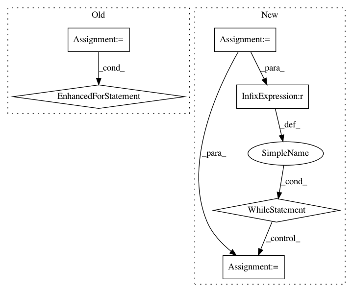

d78c982b326adeed6ac25200dc6892ff8f518ca6,keras/engine/network.py,Network,from_config,#Any#Any#Any#,934
Before Change
for layer_data in config["layers"]:
layer = created_layers[layer_data["name"]]
if layer in unprocessed_nodes:
for node_data in unprocessed_nodes.pop(layer):
process_node(layer, node_data)
name = config.get("name")
input_tensors = []
output_tensors = []
for layer_data in config["input_layers"]:
After Change
// Process all nodes in layer, if not yet processed
if layer in unprocessed_nodes:
node_data_list = unprocessed_nodes[layer]
// Process nodes in order
node_index = 0
while node_index < len(node_data_list):
node_data = node_data_list[node_index]
try:
process_node(layer, node_data)
// If the node does not have all inbound layers
// available, stop processing and continue later
except LookupError:
break
node_index += 1
// If not all nodes processed then store unprocessed nodes
if node_index < len(node_data_list):
unprocessed_nodes[layer] = node_data_list[node_index:]
// If all nodes processed remove the layer
else:
In pattern: SUPERPATTERN
Frequency: 3
Non-data size: 6
Instances
Project Name: keras-team/keras
Commit Name: d78c982b326adeed6ac25200dc6892ff8f518ca6
Time: 2019-01-22
Author: andrew.docherty@data61.csiro.au
File Name: keras/engine/network.py
Class Name: Network
Method Name: from_config
Project Name: NifTK/NiftyNet
Commit Name: 34128f484f03c771b2dc63a9fa53746e6529dff3
Time: 2018-01-31
Author: wenqi.li@ucl.ac.uk
File Name: niftynet/engine/application_driver.py
Class Name: ApplicationDriver
Method Name: _training_loop
Project Name: dmlc/gluon-nlp
Commit Name: a08eaf2fa930d13967fd78a8ec53069394917ad3
Time: 2018-09-18
Author: chgwang@amazon.com
File Name: scripts/language_model/word_language_model.py
Class Name:
Method Name: evaluate